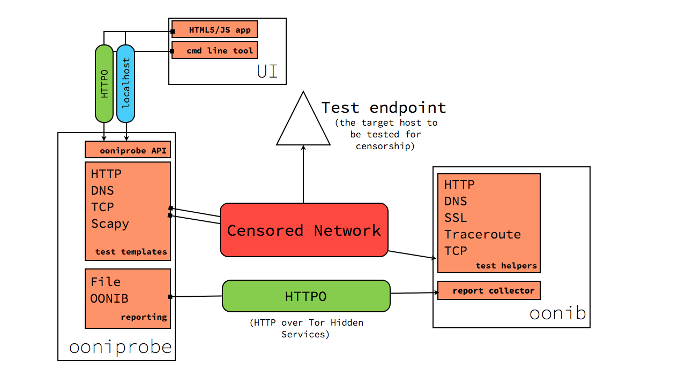

Architecture¶
The goal of this document is provide an overview of how ooni works, what are it’s pieces and how they interact with one another.
Keep in mind that this is the big picture and not all of the features and compontent detailed here are implemented. To get an idea of what is implemented and with what sort of quality see the Implementation status section of this page.
The two main components of ooni are `oonib`_ and `ooniprobe`_.
{kind=link}
ooniprobe¶
ooniprobe the client side component of ooni that is responsible for performing measurements on the to be tested network.
The main design goals for ooniprobe are:
Test specification decoupling¶
By this I mean that the definition of the test should be as loosely coupled to the code that is used for running the test.
This is achieved via what are called Test Templates. Test Templates a high level interface to the test developer specific to the protocol they are writing a test for. The Test template will then be responsible for implementing the measurement logic, generic error handling and the formatting of reports using a format that is standard for the type of test that is being run.
This does not mean that test developers should only include in their report tests what is generated for them by the test template, but, when using Test Templates, the report will always be a superset of what is provided by the test template.
For example the a test based on the ooni.templates.httpt.HTTPTest test
template will always have the list of HTTP requests performed and the responses
received, but a developer may with to include inside of their report the
checksum of the of the content as is show in the example in Writing Tests.
Support for high concurrency¶
By this I mean that we want to be able to scan through big lists as fast as possible.
The problem when doing censorship measurement tests is that you often have to deal with very big lists and going over these lists sequentially is slow and time consuming.
For this purpose we have chosen to use the Twisted networking framework. The reasons for using Twisted are:
- It is stable and has been around for many year (version 1.0 came out 11 years XXX citation)
- People in the Tor community use it
- People in the Python community use it
If you have an argument for which you believe Twisted is not a good idea, I would love to know :).
Notes: .. XXX
Running lot’s of tests concurrently can reduce their accuracy. The strategy for dealing with this involves doing proper error handling and adjusting the concurrency window over time if the amount of error rates increases.
Currently the level of concurrency for tests is implemented inside of :class:`ooni.inputunit`_, but we do not expose to the user a way of setting this. Such feature will be something that will be controllable via the ooniprobe API.
Standardization¶
oonib¶
This is the backend component of OONI. It is responsible for exposing test helpers and the report collector.
Test Helpers¶
Test helpers implement server side protocols that are of assistance to ooniprobes when running tests.
If you would like to see a test helper implemented inside of oonib, thats great! All you have to do is open a ticket on trac.
To get an idea of the current implementation status of test helpers see the oonib/testhelpers/ directory of the ooniprobe git repository.
Report collector¶
An ooniprobe run¶
Here we describe how an ooniprobe run should look like:
- If configured to do so ooniprobe will start a connection to the Tor
network for the purpose of having a known good test channel and for having a way of reporting to the backend collector
- It will obtain it’s IP Address from Tor via the getinfo addr Tor Ctrl port
request.
- If a collect is specified it will connect to the reporting system and get
a report id that allows them to submit reports to the collector.
- If inputs are specified it will slice them up into chunks of request to be
performed in parallel.
- Once every chunk of inputs (called an InputUnit) will have completed the
report file and/or the collector will be updated.
ooniprobe API¶
Note: This is currently not under active development, but we are looking for people interested in hacking on it!
The goals of the ooniprobe API is that of allowing applications to interact with an ooniprobe.
Such API will be exposed as an HTTP service that communicates with applications thanks to JSON formatted messages.
When ooniprobe is launched it will start as a daemon. Through the HTTP based API it will be possible to start tests, stop tests and monitor test progress.
By having it use HTTP it will be possible to decouple the problem of running tests from that of controlling them. You can think of it as the Tor Control port of ooniprobe.
The kinds of clients that will be interested in using such API are:
- The ooniprobe command line interface
- The ooniprobe HTML5/JS web application
- Any third party tool that is interested in running ooniprobe tests with custom arguments.
Towards a RPC like interface¶
Such API will allow ooniprobes to expose such API as a Tor Hidden Service (if the user wishes to do so). This will allow people running ooniprobe to give the .onion address of the probe to a censorship researcher and they will then be able to run tests from the network vantage point of the probe.
Draft API specification¶
Through the ooniprobe API it will be possible to start tests, stop tests and monitor test progress.
List tests¶
GET /test
Shall return the list of available tests as an array.
This is how a response looks like
[{'id': 'http_requests',
'name': 'HTTP Requests Test',
'description': 'This test perform a HTTP GET request for the / resource over the test network and over Tor',
'type': [ 'blocking' ],
'version': '0.1',
'arguments': {
'urllist': 'Specify the list of URLs to be used for the test'
}
}]
type may be either blocking or manipulation.
Start tests¶
POST /test/<test_id>/start
Is used to start a test with the specified test_id.
Inside of the request you will specify the arguments supported by the test
This is how a request could look like
{
'urllist':
['http://google.com/', 'http://torproject.org/']
}
The server will then respond with the test object
{
'status': 'running',
'percentage': 0,
'current_input': 'http://google.com/',
'urllist':
['http://google.com/', 'http://torproject.org/']
}
Stop tests¶
POST /test/<test_id>/stop
This will terminate the execution of the test with the specified test_id.
The request may optionally contain a reason for stopping the test such as
{
'reason': 'some reason'
}
Monitor test progress¶
GET /test/<test_id>
Will return the status of a test
Like so for example
{
'status': 'running',
'percentage': 0,
'current_input': 'http://google.com/',
'urllist':
['http://google.com/', 'http://torproject.org/']
}
Implementation status¶
ooniprobe¶
Reporting
- To flat YAML file: alpha
- To remote httpo backend: alpha
Test templates
- HTTP test template: alpha
- Scapy test template: alpha
- DNS test template: alpha
- TCP test template: prototype
Tests
To see the list of implemented tests see: https://ooni.torproject.org/docs/#core-ooniprobe-tests
ooniprobe API
- Specification: draft
- HTTP API: not implemented
ooniprobe HTML5/JS user interface
Not implemented.
ooniprobe build system
Not implemented.
ooniprobe command line interface
Implemented in alpha quality, though needs to be ported to use the HTTP based API.
oonib¶
Collector
- collection of YAML reports to flat file: alpha
- collection of pcap reports: not implemented
- association of reports with test helpers: not implemented
Test helpers
- HTTP Return JSON Helper: alpha
- DNS Test helper: prototype
- Test Helper - collector mapping: Not implemented
- TCP Test helper: prototype
- Daphn3 Test helper: prototype